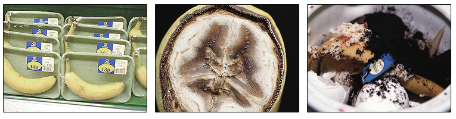

IT WAS NEW. NO IT WASN’T!
“What you need to know about the past is that no matter what has happened, it has all worked together to bring you to this very moment. And this is the moment you can choose to make everything new. Right now.” – Unknown

Now’s the fun part. I know I’ve been building it up, but really, it’s not as hard as it seems. You’ll have to memorize three new conjugations for these adjectives and then remember the adjectives themselves (which hopefully you’ve already made some headway in, right?). In this chapter we’ll go through the various conjugations, show you some examples, and then let you practice. Really it’s just going to take some practice and repetition to get it down – maybe throw in a few な adjectives in the mix to keep your brain moving. You’ll get there, just focus a bit.
Conjugating い adjectives is a bit like conjugating verbs. With い adjectives, you’re only going to need to conjugate them if they come at the end of the sentence (also like verbs). In Japanese, if you haven’t figured it out already, the conjugation doesn’t come until the end of a sentence. This leaves all sorts of room to have a bit of fun with the language. Take a look at these two sentences:
あなた が 好き です (I like you)
あなた が 好き じゃありません (I don’t like you)
Notice how you don’t know what the sentence will be saying until the very end? You can wait up to the last minute and change the meaning of your sentence completely. I remember a comedy bit (from a show a lot like SNL) that made fun of romance dramas. It went something like this:
Boy: きみ が 嫌い ．．．[long pause] ．．．じゃありません
Girl: [sigh of relief]
Boy: でも (but), きみこさん が すき ．．．[long pause] ．．．じゃありません
Girl: [another sigh of relief]
… and so on.
Essentially, this skit shows that you can wait until the last minute before you add the last bit to your sentence. Before that, there’s no way to know whether what you’re saying is past, present, negative, or past negative. Of course, most of the time people will know because of context, but that shouldn’t stop you from having a little fun with it!
〜かった PAST
The first thing you need to learn about conjugating い adjectives is that after you’ve conjugated them, you still want to add です on the end. The です doesn’t really do anything per se, but it does show the politeness level of the sentence. Levels of politeness are something that we’ll learn more about in Seasons 3 and beyond. Even when we’re working with past tense, negative, or past negative, you still put the です on the end of these. It just shows that you’re talking like an upstanding member of society, and doesn’t necessarily mean the sentence is present tense. Only when the い adjective hasn’t been altered (and you’ve added the です) is the sentence present positive. Anyways, you’ll see what I’m talking about in just a minute.
To conjugate an い adjective, you’ll want to take the last い (sometimes there’s more than one, like in the word かわいい) and change it to かった. Let’s take a look at a few examples.
あたらしい → drop the last い for replacement
あたらし → replace the missing い with かった to make it past tense
あたらしかった → add です on the end to make your sentence a standard polite sentence
あたらしかった です → this means “It was new.” Once again, the です just makes the sentence polite. Later on you’ll learn that you can omit the です completely or replace it with a だ to be more casual (don’t do it now, though – much easier to go from formal / standard to casual than the other way around). You’ll be learning all about this in season 3, so it’s not that far off.
So, all we’re doing here is just removing the last い and replacing it with the new conjugation: かった. Let’s take a look at some more examples.
おいしい です → おいしかった です
きびしい です → きびしかった です
かわいい です → かわいかった です
おもしろい です → おもしろかった です
Before we start looking at these in sentences, I want to go through the other two conjugations. Negative and past negative. After you understand this first one, it should be easy to grasp the rest.
〜くない Negative
The next conjugation we’re going to learn is くない, which is negative form. Just like かった, above, you’ll also want to add a です after it, even though くない is making the sentence negative. Also once again, you’ll just be replacing the last い with くない. Simple as that, though, you’ll still have to remember it with that brain of yours.
ふるい → drop the last い
ふる → replace the dropped い with くない
ふるくない → Add a です to the end to make it polite
ふるくない です → This means “it is not old.” How would you say “it was old?”
ふるかった です → It was old.
Very simple once you memorize くない along with the others.
さむい です → さむくない です
あつい です → あつくない です
おいしい です → おいしくない です
たのしい です → たのしくない です
Let’s take a look at the last conjugations, then we’ll hit on one of the weird exceptions that you’ll just have to memorize (sorry!).
〜くなかった PAST NEGATIVE
The last conjugation we’re going to learn is past negative. Once again, you replace the last い with the conjugation (くなかった), and you should add です to the end of it to make it polite (for now, at least).
たかい → Drop the last い
たか → Replace the last い with くなかった
たかくなかった → Add a です to the end to make it more polite
たかくなかった です → This means “it was not tall” or, depending on the context, “it was not expensive.”
Let’s take a look at some more examples.
くらい です → くらくなかった です
むずかしい です → むずかしくなかった です
いそがしい です → いそがしくなかった です
うるさい です → うるさくなかった です
とおい です → とおくなかった です
Now, do a quick review. Do you remember how to do the following conjugations?
- 〜かった です
- 〜くない です
- 〜くなかった です
Now that you know the various い adjective conjugations, let’s take a look at one exception that can be a bit weird. The great thing about this exception is that you’ll hear parts of it all the time, maybe without realizing that it’s an い adjective.
いい AND よい
If you’ve been studying your い adjective list (like you’re supposed to), then maybe you’ve come across the い adjective いい (good). This one is kind of weird and a bit of an exception. You’ll just have to remember the rules associated with this one.
Present: いい or 良い (よい). You won’t see よい quite as often, at least in present/future form, but occasionally you will come across it. The よい version becomes more important when we look at other conjugations / tenses.
Past: Instead of following the rules above and making いい into いかった (this is incorrect), you’ll want to use the base よい instead. So, in order to make “good” past tense, you’ll want to convert it to よかった. ”It was good” or, in many situations, this can mean something along the lines as “thank goodness!”
Negative: Just like with past tense, you’ll want to use よい and convert that. よい becomes よくない. “It is no good.” You’ll hear this one a lot too. よくないです！ “That’s no good!” “That’s bad” etc.
Past Negative: I bet you can figure out what this one is: よくなかった. “It was no good.”
You’ll occasionally run into adjectives that use いい in them as well. For example, かっこいい (cool) follows the same rules as いい / よい. You’ll have to remember which ones do use the いい / よい rules though, because some do and some don’t. For example, かわいい does not use these special rules. Through practice and the learning of “set phrases,” you’ll be able to distinguish, though. Luckily this doesn’t come up all that often, so more times than not you’ll be perfectly fine.
THE TONGUE TWISTING ADJECTIVE
If you want to have a bit of fun, there is one particular adjective that is really hard for a lot of people to do. If you can get this down, then you’ll be right up there with the best. The difficult adjective is あたたかい (warm). Now, in present / future tense, it’s not all that challenging, but let’s check it out in past, negative, and past negative. That’s where it can get a bit hairy.
あたたかい: A-ta-ta-ka-i – this is standard, present tense. No problems there, right?
[audio:http://www.textfugu.com/wp-content/uploads/2010/01/atatakai.mp3]
あたたかかった: Take a moment to spell everything out correctly. A-ta-ta-ka-ka-tta. Try to say that 10 times fast.
[audio:http://www.textfugu.com/wp-content/uploads/2010/01/atatakakatta.mp3]
あたたかくない: This one isn’t quite as bad, but still pretty hard for plenty of people. A-ta-ta-ka-ku-na-i.
[audio:http://www.textfugu.com/wp-content/uploads/2010/01/atatakakunai.mp3]
あたたかくなかった: This one is the motherload. A-ta-ta-ka-ku-na-ka-tta.
[audio:http://www.textfugu.com/wp-content/uploads/2010/01/atatakakunakatta.mp3]
Now, for fun, try to say all three one after another without stopping in between. Can you do it? Believe it or not, practicing this one adjective will help you tackle some of the more challenging, longer sentences that will be coming up in later chapters. Help you loosen the brain for rolling Japanese off the tongue.
Chapter Content
Before You Move on:
- Know the four conjugations: Present, Past, Negative, Past Negative, when it comes to い adjectives
- Remember that you have to add です onto the end of all of these, to make the sentence polite (not to change the tense)
- Know the い adjective vocab like the back of your hand
- Complete the worksheets